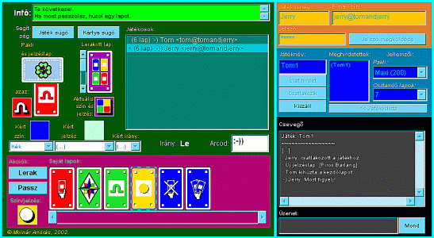
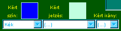
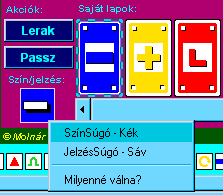

Turistakártya |
 Bevezetõ | Bevezetõ |
 Szabályok | Szabályok |
 Súgó | Súgó |
 Paklik Paklik
JátékSúgó: A Kártyaasztal |
Turistakártya |
Bevezetõ |
Szabályok |
Súgó |
Paklik
JátékSúgó: A Kártyaasztal |

|
|  |
|
|
Játékos- és Játékpanel |
 Lap teteje |
 A jobb felsõ sarokban lévõ narancssárga Játékpanelen kell beírni
egy tetszõleges játékosnevet, a saját email-címet és a hozzá tartozó
jelszót. A jelszó kiküldhetõ az e-mail címre a [Jelszó megküldése]
gombbal.
A jobb felsõ sarokban lévõ narancssárga Játékpanelen kell beírni
egy tetszõleges játékosnevet, a saját email-címet és a hozzá tartozó
jelszót. A jelszó kiküldhetõ az e-mail címre a [Jelszó megküldése]
gombbal.Még nem mûködik a [Jelszó megküldése] funkció!
A Gyakorlóasztalon nincs jelszókezelés, a Játékpanelen ajelszó mezõ és a
[Jelszó megküldése] gomb helyén az [ÚJ ABLAK] gomb található.
Ezzel bármikor nyithatunk új ablakot (VCardApplet-et), s a játék
szimulációjában az általunk nyitott ablakok felelnek meg a különbözõ
játékosok Játékasztal-nézeteinek. A Gyakorlóasztal használatának elsõ
lépése mindig az [ÚJ ABLAK] megnyomása, mert ezzel indul el a Virtuális
SzélrózsaSzerver a böngészõben.
A jobb oldal közepén lévõ kék Játékpanelen láthatók a meghirdetett játékok. Itt adhatjuk meg,
hogy mely játékhoz szeretnénk csatlakozni vagy milyen új játékot
szeretnénk meghirdetni.
A meghirdetett játékok listájában kattinva egy elemre
(vagy beírva annak nevét a 'Játéknév' mezõbe) a jobb szélen megjelennek annak
jellemzõi. A jellemzõket mi magunk állíthatjuk be, ha új játékot akarunk hirdetni.
Ehhez egy még nem létezõ játéknevet kell beírni a 'Játéknév' mezõbe.
Új játék meghirdetéséhez be kell írni egy még nem létezõ játéknevet (szóköz és kerek zárójel
nem lehet benne), ki kell választani a paklit és az osztandó lapok számát, végül meg kell
nyomni az [Újat hirdet] gombot.
Játékhoz való csatlakozáshoz elég beírni egy már létezõ játéknevet vagy kattintani a
megfelelõ meghirdetett játéknévre a listában, s meg kell nyomni a [Csatlakozik] gombot.
A kerek zárójelben lévõ játéknevek már elkezdett játékokat jelentenek, ezekhez már nem lehet
csatlakozni.
Játék közben bármikor kiszállhatunk a játékból a [Kiszáll] gombra való kattintással.
A Játék- és a Játékospanel tartalma csak akkor módosítható, ha
nem vagyunk játékban.
|

|
|
|
Csevegõ |
Lap teteje |
|
A jobb alsó sarokban található a (konzolra emlékeztetõ) fekete színû Csevegõ.
Ha játékban vagyunk (csatlakztunk vagy mi hiordettük meg), akkor cseveghetünk
a többi játékossal: beírjuk a mondandónkat az 'Üzenet' mezõbe és megnyomjuk
a Mond gombot. Üzenetünk - csakúgy mint a többieké - nevünkkel és jelenlegi
arckifejezésünkkel együtt jelenik meg a Csevegõ mezõjében.
Ha játékhoz csatlakozunk a megjelenõ [...] azt jelzi, hogy nem elejétõl fogva követjük
az eseményeket.
A név (és arckifejezés) nélküli üzenetek a SzélrózsaSzerver rendszerüzenetei. Ilyenek
a játékhoz csatlakozás, kiszállás, beszúrás, jelzéslap cseréje, valakinek már csak
egy lapja van, stb.
|
|
|
|
Játékoslista, Játékirány, Arckifejezés |
Lap teteje |
|
Ha csatlakozunk egy játékhoz (vagy meghirdetünk egyet), akkor a középen lévõ Játékoslistában megjelennek
a játékosok nevükkel, e-mail címükkel, arckifejezésükkel és azzal, hogy hány lapjuk van.
Ez automatikusan az események hatására változik a játék közben.
A listában kijelölt játékos van éppen soron. Ezt jelzi még a > szimbólum
is, sorának elején.
Ha éppen nem vagyunk játékban, a Játékpanel [<<Játékoslista] gombjával
pillanatfelvételt kaphatunk bármely játékról, akár már elkezdõdött, akár nem. A játékosok
adatai ide, a Játékoslistába kerülnek (ilyenkor viszont nem frissül automatikusan a lista).
A lista alatt látszik a játék iránya. Az aktuális játékosnak a listában ebben az irányban lévõ szomszédja
lesz a soron következõ játékos. Az irány játék közben változhat.
Az 'Arcod' mezõbe egy smiley kerülhet, amely 'lelkiállapotunkat' tükrözi. Ezt a játék
során bármikor változtathatjuk, s a többiek rögtön látják a változást a Játékoslistában.
Ha a Csevegõbe üzenetet küldünk, akkor a pillanatnyi arckifejezésünk
is megjelenik az üzenet sorában.
|

|
|
|
InfóBox |
Lap teteje |
|
A bal felsõ sarkoban lévõ InfóBoxban láthatjuk a ránk vonatkozó mindenkori játék- ill. Kártyaasztal-állapotot
jellemzõ szöveget. Érdemes erre mindig odafigyelni, mert ebbõl tudhatjuk meg,
mi a helyzet és mit lehet illetve kell tennünk.
A zöld háttérszín jelzi, hogy rajtunk a sor a játékban. Amikor ilyen hátterû
az InfóBox, gondoljunk arra, hogy most nekünk kell cselekednünk és telik a rendelkezésre
álló gondolkodási idõnk.
Szürke háttérszín esetén nem rajtunk a sor. Lehet ilyekor is beleszólásunk a játékba
(beszúrás, vétózás),
amelyre ha van esély, figyelmeztet az InfóBox.
Fehér a háttérszín minden más esetben (ha játékon kívül vagyunk, vagy
ha várnunk kell valamire játék közben).
A Kártyaasztal a figyelmeztetõ üzeneteket külön ablakban kévõ InfóBox-ba
írja ki, halványpiros háttérrel. A kis ablakot az [OK]-val zárhatjuk be, de
ha nyitva hagyjuk, az újonnan érkezõ üzenetek után is visszagörgethetjük a korábbiakat.
Az InfóBox alatt van a [Játék súgó] és a [Kártya súgó] gomb. Elõbbivel részletesebb
leírást kérhetünk a helyzetünkrõl, utóbbit ld. a JátékTérnél.
|
|
|
JátékTér |
Lap teteje |
|
 |
A Kártyaasztal bal oldalán középen lévõ JátékTér a Kártyaasztal leglényegesebb eleme, itt zajlik
ugyanis valójában a játék.
Pakli és jelzéslap
A JátékTér bal oldalán láthajuk a paklit és keresztben félig alatta a jelzéslapot.
Aktuális szín és jelzés, lerakott lapok
A JátékTér jobb oldalán van a lerakott lapok halma (paklija), az utoljára lerakott
lap az aktuális, ennek színe és jelzése határozza meg, hogy milyen kártyát lehet
legközelebb lerakni (alaphelyzetben színben vagy jelzésben illeszkedõt, további részletek
a KártyaSúgóban). Pontosabban szólva, nem magának a kártyának a színe és
jelzése lényeges, hanem, hogy mivé vált lerakásakor. Ha ugyanis a kártya metaszínû v. -jelzésû,
akkor lerakásakor határozódott meg, ideiglenesen a színe vagy a jelzése (hasonult valamihez). Hogy
mi lett, azt az aktuális szín és jelzés piktogramja mutatja a kártya alatt. Erre kattintva az egérrel,
kérhetünk Szín- vagy JelzésSúgót. [Az aktuális színhez és jelzéshez esetenként kért szín és/vagy jelzés
tartozik, errõl bõvebben lejjebb.]
A korábban lerakott lapokat is megnézhetjük a kártya melletti gördítõsáv segítségével (ez különösen hasznos lehet pl.
akkor, ha  jelzésû lapot tervezünk lerakni).
A [Kártya súgó] gombbal mindig arról a kártyalapról kérhetünk SzínSúgót és JelzésSúgót, amelyiken éppen állunk. jelzésû lapot tervezünk lerakni).
A [Kártya súgó] gombbal mindig arról a kártyalapról kérhetünk SzínSúgót és JelzésSúgót, amelyiken éppen állunk.
Kért szín, jelzés, irány
Bizonyos kártyalapok lerakásakor színt, jelzést vagy irányt kell kérni, esetleg kettõt vagy mindhármat egyszerre.
Ha valaki színt, jelzést vagy irányt kért, az a JátékTér alján jelenik meg. Ha nekünk kell kérnünk valamelyiket,
akkor a hozzá tartozó lista kinyithatóvá válik és kiválaszthatunk belõle egy elemet.
A kért színrõl SzínSúgót, a kért jelzésrõl
JelzésSúgót kérhetünk a piktogramjukon történõ egérkattintással kinyíló menübõl.
Ha nekünk kell kérnünk, még mielõtt véglegesítenénk a kérést, tetszõleges kérhetõ
listaelemet kiválasztva annak piktogramja megjelenik és súgót kérhetünk róla.
A szín- illetve jelzéskérés általában azt jelzi, hogy a következõ lerakott lapnak
ilyennek kell lennie. Az iránykérés általában kártyalapok átadásának irányát jelenti,
de mindig kérjünk Szín-, s fõleg JelzésSúgót az akutális színrõl/jelzésrõl, ha nem tudjuk,
hogy mi célból kell(ett) kérni valamit.
|
|
|
Saját lapok és akciógombok |
Lap teteje |
A kártyáink
Saját, "kézben lévõ" kártyáink jelennek meg a Játékasztal alsó részén, középen.
Egyszerre csak 8 lap látható, a többit a vízszintes gördítõsávval érhejük el.
Egérkattintással választhatunk ki kártyát. A kijelölt lap köré kék-lila szaggatott
keret kerül, s a lap színének és jelzésének négyzet alakú piktogramra a bal oldalon
a gombok alatt megjelenik.
A kiválasztott kártyáról SzínSúgót és JelzésSúgót kérhetünk
a gombok alatti piktogramra kattintva megjelenõ menübõl. A menüben lévõ
"Mivé válna?" pedig a játék pillanatnyi állapotában megadja, hogy milyen színûnek és
jelzésûnek számít a kártya (ha ugyanis metaszínû és/vagy jelzésû, akkor hasonul a metaszíntõl/-jelzéstõl
függõen valamihez, s így kap igazi színt/jelzést ideiglenesen). A hasonult szín és jelzés a piktogram
helyén jelenik meg, nem metaszínû/metajelzésû kártyáknál természetesen nem történik semmi.
A kártyák rendezgetése nem a megszokott drag&drop elven mûködik, hanem úgy, hogy
az áthelyezni kívánt kártyára a jobb egérgombbal rákattintunk (az egérkurzor megváltozik) és
a kívánt új helyre kattintva 'letesszük' a lapot. A kártya áthelyezése közben használhatjuk
a gördítõsávot is.
Egy kártyára való dupla kattintás (ha kezeli a böngészõnk) az akciógombok közül
a felsõre való kattintással egyenértékû (ld. lent).
Akciógombok
A játék során a bal alsó sarok feletti két gomb segítségével tevékenykedhetünk. A gombok szövege
és állapota (megnyomhatósága) mindig változik, igazodik a pillanatnyi helyzetben lehetésges akciókoz.
A felsõ gomb mindig a kijelölt kártyával tesz valamit, az esetek túlnyomó többéségben lerakási kísérletet jelent:
Az alsó gomb nem érinti a kijelölt kártyát, s csak akkor használható, ha mi vagyunk soron. Általában passzolást vagy ahhoz hasonlót
vált ki (minden esetben azt a szándékot fejezzük ki vele, hogy jelenlegi tevékenységünket befejezve át akarjuk adni a stafétát a következõ játékosnak):
Ha a játék során nem tudjuk, hogy mi történne egy ackiógomb megnyomásának következtében,
kérjünk JétékSúgót a Kártyaasztal [Játék súgó] gombjával.
|
 |
|
|
|
|
|